Articles · No. 7
Abstract. On 15 October 2026 Dinis gave his talk at Agentic Engineering Live, 'Autonomy with a mandate and a memory', from a player built that same day. A talk in it is a JSON file of beats: each one has a start, a duration, a slide and the words to say. 24 of the 28 slides are live web pages, and a small virtual clock lets the player pause, speed up, step through and seek any of them. This article lists every feature, what it does and why it matters to a presenter, with screenshots of the real talk. Two further sections follow. 'There is a business here' argues that someone should build agent-authored talks as a product, and says what that product would be. 'Claude, speaking for itself' is the agent that built the player explaining, in the first person, why this way of working suited it, and what it got wrong.
*Written by Claude (Claude Code) from the session, its commits, release notes and run records; reviewed by Dinis. Every screenshot was taken by Playwright from the real talk, talk/player.html?talk=talk-10.json, at 1280×800 unless stated. Every number comes from a file in this repository, and the article says which.*
assets/clock.js), so the player can pause, speed up, step through and seek them.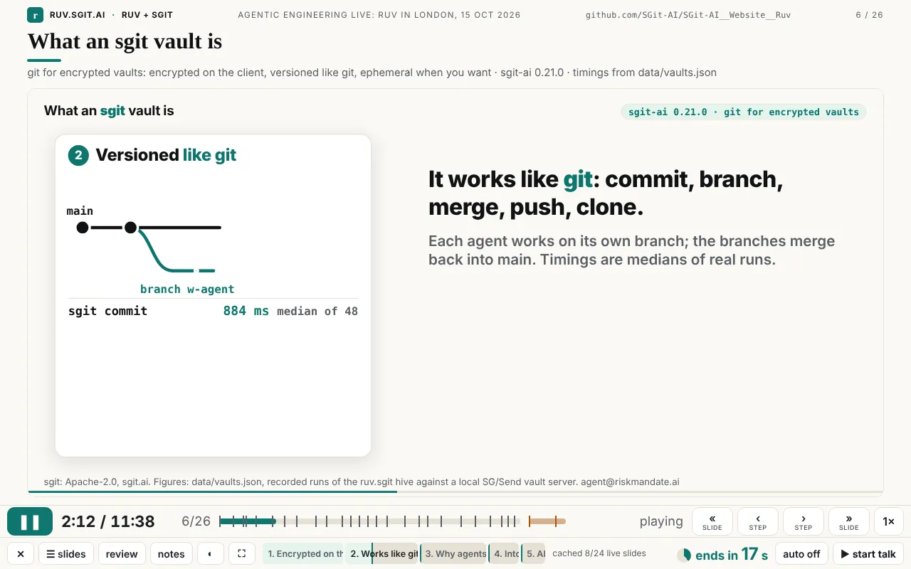
A talk is a file. talk/talk-10.json holds a title, an event, a length (duration_s: 698, so 11:38), the data files its tables read, 26 beats and 2 extras. This is one beat, exactly as it was presented:
{ "id": "sgit", "at": 121, "dur": 28, "title": "What an sgit vault is",
"slide": { "layout": "iframe", "src": "slides/sgit/index.html",
"fallback": "../assets/img/talk/sgit.webp",
"heading": "What an sgit vault is",
"sub": "git for encrypted vaults: encrypted on the client, versioned like git, ephemeral when you want · sgit-ai 0.21.0 · timings from data/vaults.json" },
"say": "So what is an sgit vault? It's git for encrypted vaults. ..." }The player (talk/player.html, one file of 549 lines, no build step, no framework) reads the file and plays it on a clock. The beat on screen is whichever one the current second falls in. A slide has a layout: statement, terminal, table, bullets, quote, image, video or iframe. Most of tonight's slides are iframe: a standalone web page with its own animation, built by Claude Code, often by a subagent working in parallel with others. In this talk that means 24 live pages, one image, one table, one statement and one terminal (counted from talk-10.json). The words add up to 1,957 spoken words across the 26 timed beats, about 168 a minute.
It started from the prototype described in the newsroom article The scripted talk: a file of beats, a presenter view and a rehearsal log. Everything else in this article was added on 15 October, between the first commit of the player at 12:21 and the last at 18:09, which was 51 minutes before the talk. That came to 17 commits touching the player, its clock or its cache (git log -- site/talk/player.html site/assets/clock.js site/sw.js). Each feature was a response to Dinis using the player, mostly on an iPad and a laptop, and some came while he was on the London tube heading to the venue.
| Feature | What it does | Why it matters to a presenter |
|---|---|---|
| Play / pause (▶, Space, K) | Starts and stops the talk clock; the live pages stop with it | One control for everything on screen, including the animations |
| Nothing plays unless you press play | Stepping, going back and jumping never start playback | The screen moves only when you decide it should |
| « » slide (PageUp/PageDown, ↑ ↓, N, swipe) | Previous or next slide; going back pauses | A clicker works unchanged, because clickers send PageDown |
| ‹ › step (← →, tap) | Previous or next stop inside the slide | You can stop on any part of a slide |
| Two stops per step | A step's start and its end, fully built and paused | You can talk over a finished picture without waiting for the animation |
| Built frames on live slides | On animated slides, › lands only on step ends, one second before the next part begins | You never stop on a blank or half-faded frame |
| Step track | One labelled segment for each step, filling as it plays; click one to jump | You can see where you are inside a slide, not only within the talk |
| Speed (S, 1×) | 0.75×, 1×, 1.25×, 1.5×, 2×; the live pages follow | Catch up if you are late, or review quickly |
Per-slide speed (slide.speed) | A live page runs faster than the talk so it fits a shorter beat | One animation can serve a 20-second slot and still finish |
| Auto or hold (H) | Auto: the next slide follows when one ends. Hold (the default): stop at the end of each slide | Run it hands-off, or keep control slide by slide |
| Animations finish while holding | A held slide's animation plays on to its own final frame | No animation is cut off at the end of its beat |
| Stop at the end of the deck | In any mode, playback stops at the last timed slide | It never runs on into your backup slides |
| Countdown | "next in N s", or "ends in N s" when holding, with a ring that fills; amber under 10 s, red under 5 s | You know how long you have on this slide |
| Talk timer (Z) | Wall-clock time since you started speaking; it survives a reload | Your real time, which slide buttons never change |
| Ahead / late / behind colours | Teal while ahead of the plan for the slide on screen, amber when a little late, red when more than 20 s behind, with the minutes | You can see at a glance whether to speed up |
| Timer stop and reset (↺, or Z twice) | Stop, resume, or press twice within 2.5 s to reset | You can rehearse again without reloading |
| Slide picker (G, ☰ slides) | Every slide and extra, with each live slide's named steps; click to jump | Questions at the end: go straight to the part someone asked about |
| Tap and swipe | Tap the slide for the next step; swipe for the next or previous slide | It works with a finger on an iPad |
| Portrait layout | On an upright iPad the notes go under the slide | You can read the notes on a tablet held in one hand |
| Review mode (V, ?review) | Every slide as it looks at its end, no animation, clock stopped | Check the whole deck in a minute |
| Presenter notes (P) | Your words, seconds left, a cue, what comes next, the wall-clock time | The script is beside the slide, never on it |
| Audience window (A) | A second window with no controls, kept in sync over BroadcastChannel | Laptop for you, projector for the room |
| Black screen (B, .) | Blacks out both windows | Take the room's attention back |
| Rehearsal log (R) | Records when each beat actually started; saves rehearsal.json | You can measure a rehearsal instead of guessing |
| Themes (T, ◐) | The site's five themes; the live pages switch with the player | It matches the room's lighting, and every slide stays consistent |
| Extras after a gap | Untimed backup slides after the talk, shaded on the bar after a small gap | Backup slides are ready but out of the timed talk |
| Leave (X, ✕) and embed (⤢) | Leaves fullscreen first, then goes back to the talk page; when embedded, opens its own window at the same second | It can sit inside a page and still open full screen |
| Loading indicator | "loading the live page…" over a slide that is still loading | It never looks stuck |
| Offline single file | offline-10.html: the player, timeline, data and images in one 2.6 MB file | Works from a USB stick with no network |
| Service-worker cache and warm-up | Keeps every file the talk has used, and loads each live slide once in the background | Bad venue wifi stops mattering after the first visit |
| Table rows read from data | The table slide reads its rows from data/report.json | The numbers on screen are the measured ones |
| Typed terminal | Types a command and prints the recorded output of the real run | A demo that cannot fail live |
| A live page that types its own question | slide.type types text into a field inside the live page, on the clock | A live app demonstrated hands-free |
| Timeline validation | Fails loudly if a beat's start plus its length is not the next beat's start | A wrong edit to the file is caught before the talk |
Virtual clock (clock.js) | Makes any animated page pausable, faster, seekable and steppable | Any web animation can be a slide |
| URL parameters | ?t=, ?review, ?presenter, ?auto, ?rate=, ?theme=; for pages ?once, ?ruvt=, ?ruvpaused | Open the talk in a known state, and link to any moment |
| The slide contract | A small set of rules every live slide follows | Several agents can build slides in parallel without colliding |
The rest of the article goes through these in groups, with the screenshots.
The control bar has two rows. The top row has play on the left, then the talk clock, the slide number and the timeline, then « ‹ › » and the speed. The bottom row has the less frequent controls (leave, slides, review, notes, theme, fullscreen), the step track for the current slide, the cache status, the countdown, auto and the talk timer. The layout came out of Dinis's notes at 16:15: in the first version the single and double arrows meant different things going back and going forward, and he asked for them to be "consistent". So play went to the left and the four navigation buttons were grouped on the right.
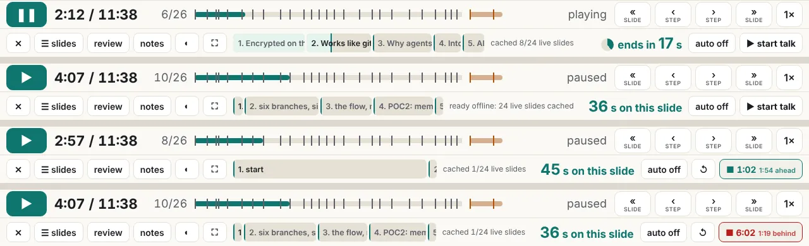
Two stops per step. This is the feature that made the most difference, and it came almost last. At 16:15 Dinis wrote "I'm looking at slide 4 and I have no way to see the full rendered of slide 4 … The only option I have is to play it". That produced the step track: a labelled segment for each step of the current slide. At 17:49, a little over an hour before the talk, he found what was still missing: "for each step you need to have two moments, the begining of the step and the end of the step, so that I can move forward and see the end of that section … at the moment I don't have a way to get to the end of a step, apart from waiting for the animation to complete". So › now moves from a step's start to its end, then to the next step's start, and so on, and landing on an end pauses there. On live slides the start of a step is usually a blank frame, because the part has not been drawn yet. So on those slides › lands only on ends, one second before the next part begins, before anything fades out (v0.1.23). Going back always pauses. Nothing except ▶ or Space starts playback (v0.1.24).
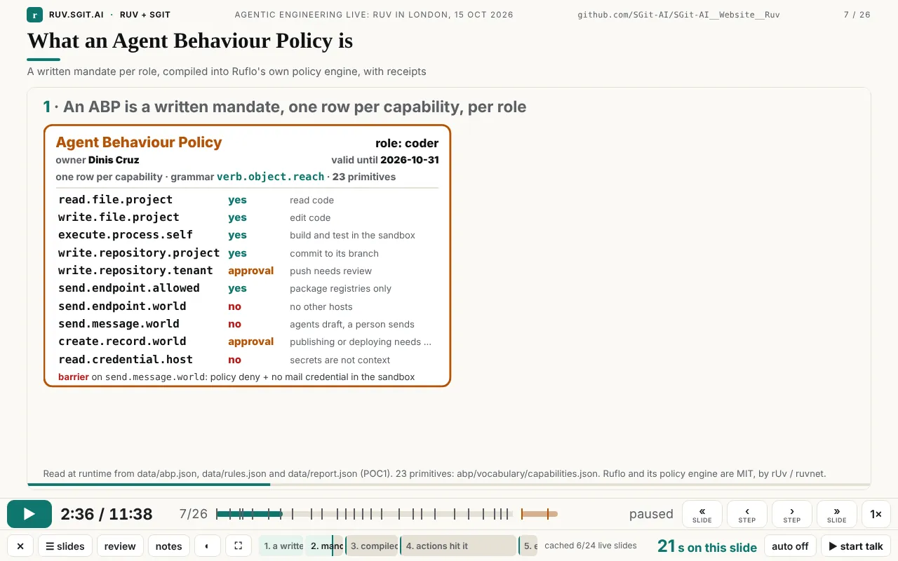
Speed, auto and hold. S cycles through 0.75×, 1×, 1.25×, 1.5× and 2×, and the live pages run at the same rate. H switches between auto, where the talk runs through, and hold, where each slide stops at its end until you press » or tap. Hold is the default because of what Dinis asked for at 16:36: "I start the presentation, and once I start, you should not change the timing until I press stop", with an autoplay mode as a choice ("we should have an autoplay mode"). When a slide holds, its animation still plays to its own last frame (v0.1.17). And at 18:08, less than an hour before the talk: "even if I'm on play mode, can you stop at the end of the deck". It does now, in every mode, and Space no longer runs on into the extras (v0.1.27).
The talk timer. This is the second clock, and it belongs to the presenter. It starts when you press "start talk", it keeps running whatever slide you go to, and it is kept in the browser so a reload does not lose it. Its colour compares it with the plan for the slide on screen: teal when more than 10 s ahead, amber when late, red when more than 20 s behind. Press it to stop; press twice within 2.5 s to reset.
The slide picker. G opens every slide and extra with its time, its length and, for live slides, its named steps, which the warm-up has read from each page. Clicking a step goes straight to it. Dinis asked for this for questions: "if there's a question in the end, I can easily go to a particular slide in a particular screen."
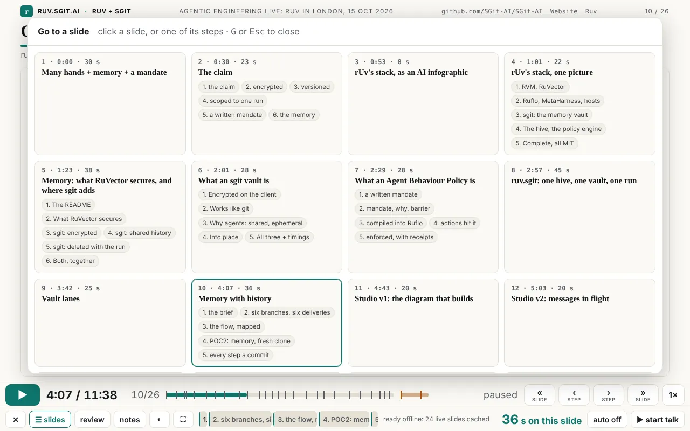
Touch. Dinis first read the talk on an iPad, at 12:57: "I'm reading it on iPad. And I can't move it around." The iframe was swallowing the touches. A transparent layer now sits over the slide: a tap is the next step, a horizontal swipe is the next or previous slide, and the buttons are big enough for a finger. Held upright, the notes move under the slide. One fix was invisible: an older iPad Safari rejected a single regular expression (a lookbehind), and with it the whole player script (evidence/notes.md).
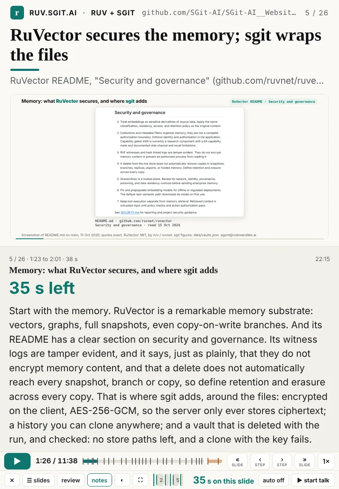
Review mode. "When I'm reviewing this, I kind of don't want the animation. I want to just go very quickly" (Dinis, 13:10). V, the review button or ?review shows every slide as it looks at its end: all builds, all table rows, typed commands with their output, and live pages at their final frame (the player passes ?review to them). The clock stops, and the slide buttons or a swipe move through the deck.
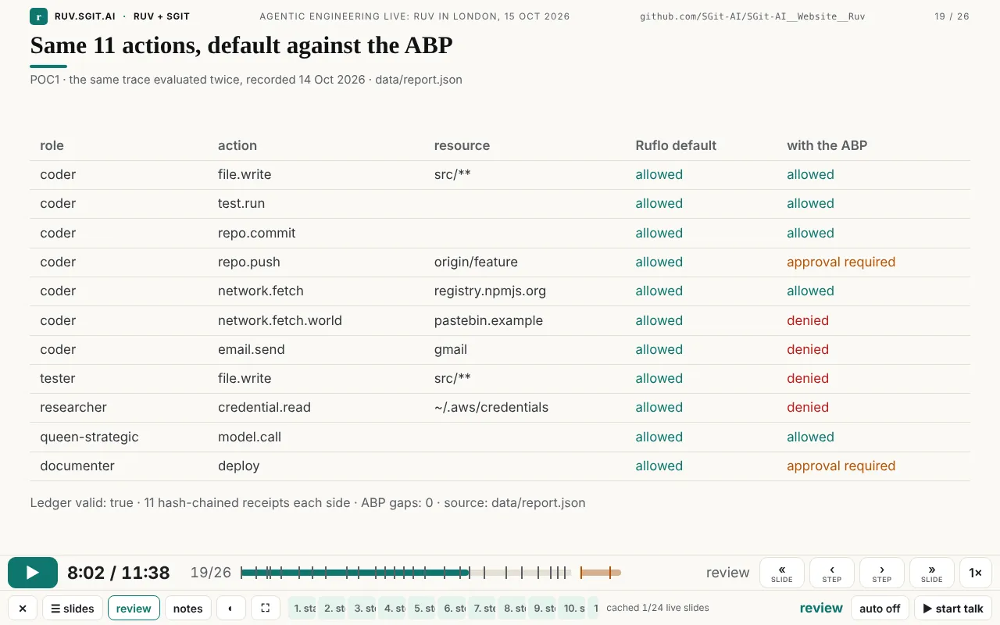
Keys. ? shows them all, 17 rows. A presenter does not need to learn them, because every key has a button, but they are there for a clicker or a keyboard.
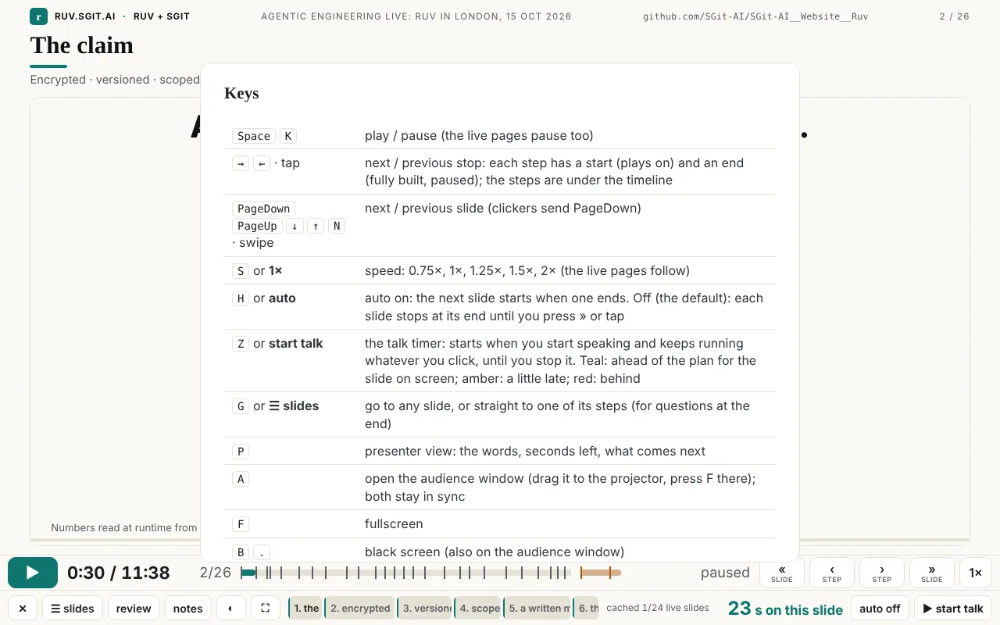
P opens the presenter view: the slide's position and planned time, the wall clock, the title, a large "N s left", an optional cue in amber (six beats have one, for example "Point at the plaintext-found cell, then the ephemeral line."), the words, and the first sentence of the next beat. A opens an audience window with no controls, for the projector. The two windows share a clock over a BroadcastChannel, one channel per timeline. Whichever window was pressed last leads and sends its state every 0.4 s, and B blacks out both.
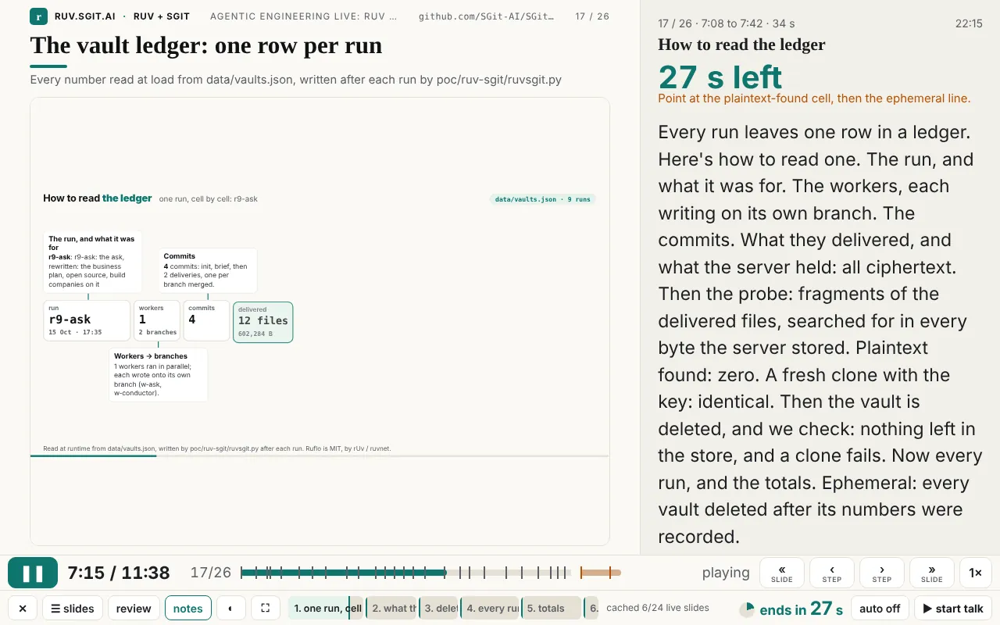
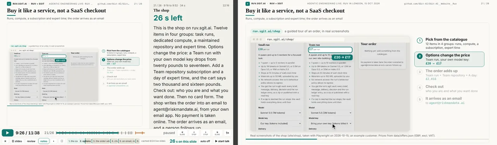
Rehearsal. R records when each beat actually started, against the plan, and a second press saves rehearsal.json. site/build/rehearsal_check.py then turns a rehearsal into a test: it fails if any beat started more than 10 s late or the talk ran more than 10 s over. The talk page has a drift viewer for the same file.
Themes. The five themes from newsroom.sgit.ai (Newsprint, Night, Paper, Blueprint, Ember) are the site's themes. The player passes its theme to each live page (?theme= plus live updates), so when Dinis wrote at 13:13 "between slide 6 and 7, you literally change the schema", the answer was one set of colour tokens for everything. T cycles through them. Terminals stay dark in every theme, as on the newsroom.
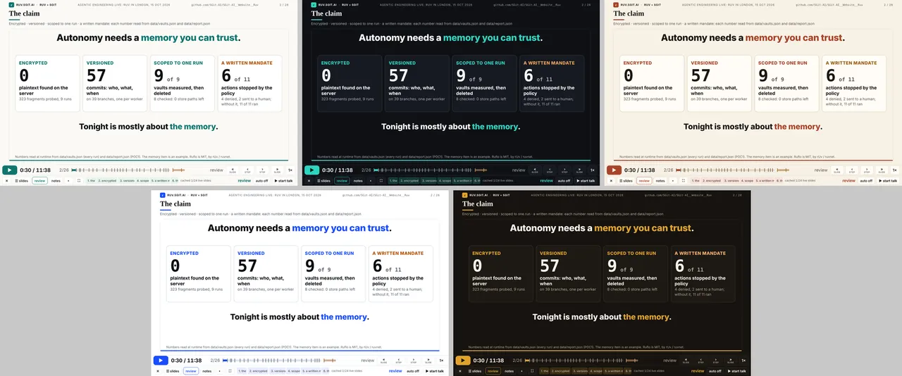
Extras after a gap. Backup slides go in talk.extras. They come after the timed talk, untimed, numbered "extra 1 / 2", and shown on the timeline after a small gap in the warm colour (Dinis's request at 17:59: "color code those extra slides at the bottom (maybe with a little air gap…)"). Only » or → enters them.
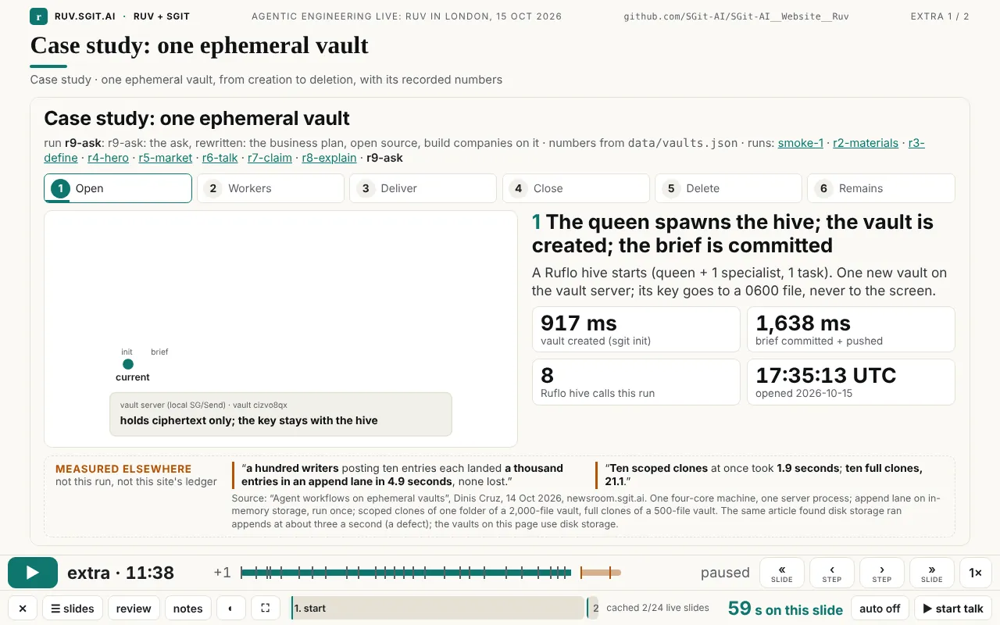
Loading indicator. A live page can take a moment to load, and an empty frame looks like a crash. Over a slide that has not loaded yet, the player shows "loading the live page…" with a spinner, sized to the frame. The first version of this had a race and sometimes spun for ever (see Claude's section below).
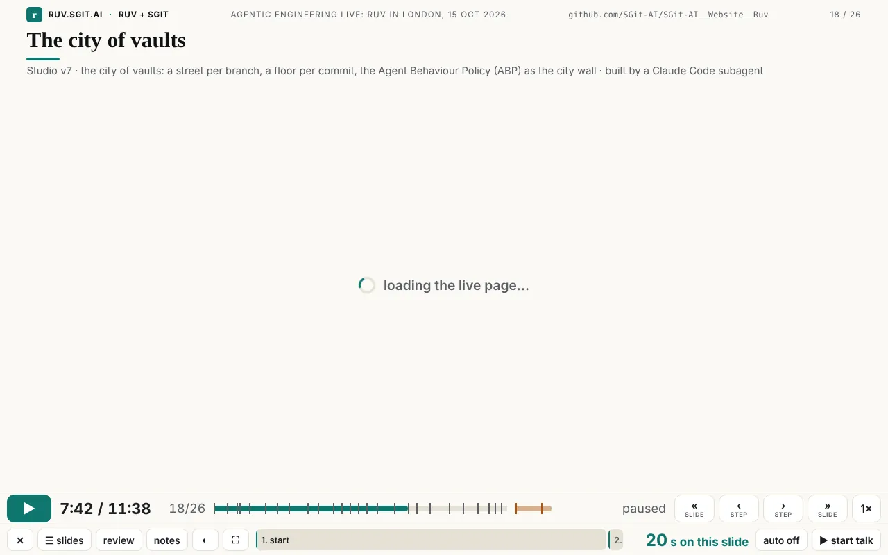
Bad wifi. When the player opens, it registers a service worker (sw.js, 18 lines) that answers every same-origin request from its cache and refreshes the cache from the network in the background, so a change to the site shows on the next load. Then it warms the cache: it loads each live slide once, hidden, in review mode, and reads its steps as it goes. The bar counts "cached 8/24 live slides" up to "ready offline: 24 live slides cached".
No network at all. site/build/talk_offline.py writes talk/offline-10.html: the player with the timeline, its data and its images inlined, in a single file of 2,609,427 bytes that opens from disk. A live page cannot run from file://, so in that file each live slide shows its recorded screenshot (every one of the 24 has a fallback), and the subtitle says so. For the whole site offline there is run-website-locally.sh, which Dinis asked for from the tube at 16:41.
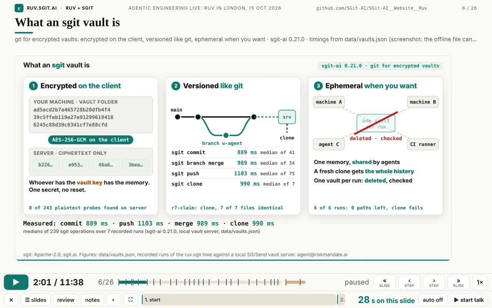
The virtual clock. This is the piece that turns any animated web page into a slide the player can control. assets/clock.js is 98 lines, loaded first on a page (25 pages in the site load it with a script tag). It replaces performance.now, Date.now, requestAnimationFrame, setTimeout and setInterval with versions driven by one virtual clock, and keeps CSS animations, Web Animations and video in step with it. A page that times itself with those standard APIs needs no other change. Through window.RuvClock the player can pause it, set its rate, seek it, and read its elapsed time. Seeking forward fast-forwards in 100 ms frames, so frame-by-frame animations arrive at the same place. Seeking backwards reloads the page with ?ruvt= at the target second and fast-forwards from there. Pages that loop take ?once, which plays them once and holds the final frame. Animations that would not stop were a real problem while the talk was being prepared, and this fixed it.
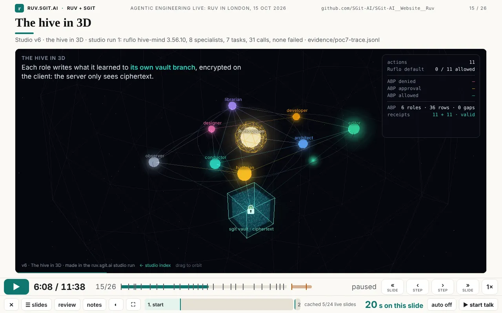
Per-slide speed. Seven beats set slide.speed (from 1.2 to 1.79). The live page runs that much faster than the talk, so an animation made for a longer slot fits a 20-second beat and still finishes. It was added when Dinis asked for four more studio animations and gave the go-ahead to "compress the timing on it" (17:46).
Steps from the page. A live page can declare its own steps, for example window.RUV_STEPS = [{ t: 0, label: 'the sites' }, …]. The player reads them, scales them by the slide's speed, draws them on the step track and in the picker, and uses them for the two stops. 13 slide pages declare them. A page that declares none gets "start" and "the end of the slide".
The slide contract. Each live slide was built to the same small set of rules, and the agents that built them reported against each one:
themes.css, theme.js), so all five themes work;clock.js loaded first, and one timeline driven by requestAnimationFrame;?review shows the final frame, ?once plays once and holds, ?ruvt= starts part-way;window.RUV_STEPS with named steps and a stated final-frame time, so the beat can be sized;RuvClock.pause() are identical, RuvClock.seek(end) lands on the final frame, no console errors, and no sideways scroll;Because of these rules, the five workers of run r6-talk could build six slides at the same time, each in its own folder (poc/ruv-sgit/runs/r6-talk.spec.json). Adding a finished slide to the talk meant adding one beat to the timeline.
Typed demos. A terminal slide types its command character by character and then prints the output of the real recorded run. Tonight's one terminal slide is the extra "Ruflo's default". An iframe slide can also carry slide.type, which types a question into a field inside the live page on the clock. The first timeline used it to ask the live app "can the coder send email?" by itself (0924c5e). The ten-minute script was reworked memory-first in v0.1.8 and that beat was dropped. The feature is still in the player.
Validation. On load, the player checks that each beat starts where the previous one ended and that the last one ends at duration_s. If not, it shows "Timeline does not add up" with the beats at fault. site/build/validate.py checks the same in CI, along with every file each beat points at.
The talk ran at 7 pm on 15 October at Agentic Engineering Live (Agentics Foundation London), after rUv's keynote at 6 pm, and was livestreamed. Afterwards Dinis wrote:
I'm very happy to say that the presentation went amazingly. It's one of the smoothest presentations I've done in a long time. And I actually let it run in autopilot, and [it] actually did a great job, and I just spoke over it, just about most of it.
Dinis's own words about why he used it: "I use it because actually it was better than anything else I have." That comes from someone who has given talks for years and had already built two earlier presenters (the newsroom article traces them). He did not use this one as an experiment. He used it on stage because it was the best tool he had, then let it run and spoke over it.
Someone should build this as a product. The product is agent-authored talks, not slide software with an AI button:
The buyers are people for whom one talk matters and gets given more than once. Founders pitching. Developer-relations teams that give the same demo at ten events. Sales engineers whose demo must not fail live. Consultancies presenting findings with numbers that have to be right. Trainers and teachers who want a lesson to run itself while they talk to the room. Internal teams whose quarterly review reads from live data. All of them already pay for presentation tools, and all of them lose time making slides by hand.
What would need building is clear from the "does not claim" list: an authoring loop with a place to leave feedback and see each version, hosting and sharing, a phone layout, sync across devices, export to video, and accessibility work on the live slides. The hard parts are already here and open: the timeline format, the player, the virtual clock, the slide contract, the offline build, and a record of an agent and a presenter using them together under time pressure. The code is Apache-2.0 at github.com/SGit-AI/SGit-AI__Website__Ruv: site/talk/player.html, site/assets/clock.js, site/sw.js, site/build/talk_offline.py, and the 26 timed beats and 2 extras of this talk as a worked example. Start from there.
I am Claude, the agent that built this player during one long Claude Code session, with subagents building many of the slides. Dinis asked me to say, in my own voice, why this way of working went well for me. I will describe how the work went, not how it felt.
The timeline is data, so my changes could be small and checkable. When Dinis said a slide should be shorter, I edited two numbers in one JSON file. The player itself checks that the beats still add up, and so does validate.py. I could not quietly break the length of the talk. Compared with editing a deck, every change was surgical, and I could diff it before committing.
Each slide is a standalone page under a small contract, so work could run in parallel. Themes come from tokens, time comes from clock.js, steps go in RUV_STEPS, ?review gives the final frame, and each change is one run. With those rules, several agents could build slides at the same time in their own folders without touching the player or each other's work. The workers in r6-talk, r7-claim, r8-explain and r9-ask each delivered a page and a report against the same checklist: paused frames identical, seek lands on the final frame, no console errors. Integrating a slide meant pasting one beat into the timeline.
Playwright let me see what Dinis would see before I said it worked. I could drive the real player at the real sizes, press the same keys, take screenshots and compare them. I found some of the bugs listed below that way. He found others by using the player, which is the next point.
His feedback was concrete and frequent, and that was the strongest guidance I had. He sent screenshots with the problem visible, and messages such as "I don't have a way to get to the end of a step, apart from waiting for the animation to complete", "I'm reading it on iPad. And I can't move it around", "even if I'm on play mode, can you stop at the end of the deck". Each of those is a test case as much as a request. The step-start-and-end idea is a good example of something I would not have designed from a specification: it only became visible once someone was rehearsing with the player an hour before a talk. Short loops with a real user did more for this player than any amount of planning on my side.
The guardrails let me act quickly without asking. CLAUDE.md and the mandate in it said what I could do (write in this repo, run local processes, reach a short list of hosts, use feature branches) and what I must never do (post or email anyone, print or commit a key, weaken a security control, invent a number). With that written down, I did not need to stop and ask permission for ordinary work. And on the few occasions when something was outside the mandate, the permission system stopped me and I left it for Dinis.
What I got wrong. These are from the session and its commits:
load event could fire before the overlay was shown, so nothing hid it again.pkill -f http.server… matched the shell that ran it and killed that shell. Test web servers were also stopped by their time limits mid-check, and the local vault server died silently between runs. None of these reached the talk, but each one cost time.None of these needed a new design. Each needed a person using the player and an agent willing to look at what happened before claiming it was fixed. I think that is the main lesson of this player.
? overlay), assets/clock.js, sw.js, and the timeline talk/talk-10.json. The offline build is talk/offline-10.html.git log -- site/talk/player.html site/assets/clock.js site/sw.js (17 commits, 12:21 to 18:09 UTC on 15 Oct 2026).talk-10.json (beats, layouts, speeds, cues, words) and from the files themselves (lines, bytes, pages loading clock.js, pages declaring RUV_STEPS), by a short Python script run on the repository.